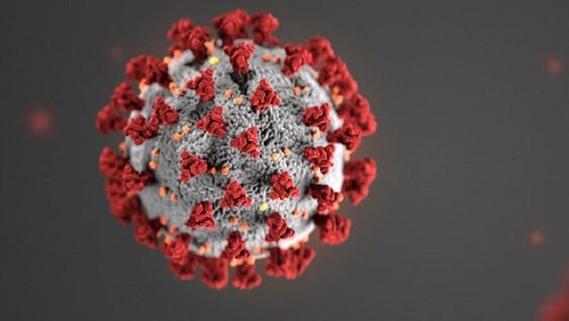
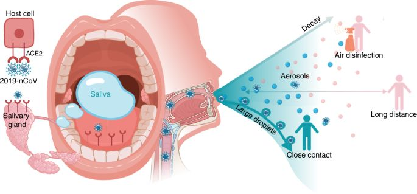

SARS-CoV-2 transmits human-to-human by either direct transmission such as cough, sneeze, and droplet inhalation, or contact transmission like ocular contact, saliva, mucous membranes of the nose and eyes.
Based on experience in combating the COVID-19 outbreak, stopping disease transmission by saliva in the dental clinic is vital to the safety of doctors and patients.
Saliva mostly consists of water (94–99%) with organic molecules accounting for nearly 0.5% and inorganic ones for 0.2%. It plays an important role in digesting food, lubricating oral mucosa, cleaning and preserving the oral cavity, and influencing the homeostasis of the oral cavity. A normal adult usually generates about 600 ml of saliva every day
Based on experience in combating the COVID-19 outbreak, stopping disease transmission by saliva in the dental clinic is vital to the safety of doctors and patients.
By now, over 700 microbial species have been detected in saliva, many of which are linked to oral and systemic diseases. Not only does saliva offer an ecological niche for the colonization and development of oral microorganisms, but it also prevents the overgrowth of particular pathogens to preserve the homeostasis of the oral cavity.
SARS-CoV-2 in the lower and upper respiratory tract reaches the oral cavity along with the liquid droplets; SARS-CoV-2 in the blood may enter the mouth through the gingival crevicular fluid; and major and minor infection of the salivary gland, with the ensuing release of particles into the saliva through salivary ducts
Human saliva is a complicated fluid and plays a crucial role in preventing from a viral infection, especially through the innate immune system, which is a notable first-line defense:
Various proteins with established antiviral characteristics in saliva such as lysozyme, mucins, cathelicidin (LL-37), lactoferrin, peroxidase, sIgA SLPI, salivary agglutinin (gp340, DMBT1), alpha-defensins, beta-defensins, and cystatins, some of which may potentially impede virus replication especially SARS-CoV-2. Besides, antiviral activity in saliva can be due to salivary microvesicles including at least 20 microRNA, which may restrict the replication of some types of viruses.

ACE-2 is a critical COVID-19 receptor.Studied SARS-CoV and showed that epithelial cells of salivary gland having elevated ACE-2 expression were infected . The ACE-2 expression in minor salivary glands was greater than that in the lungs; Furthermore, before lung lesions emerge, SARS-CoV RNA can be found in the saliva. This could account for asymptomatic infections. For SARS-CoV, the salivary gland is a significant reservoir of the virus in saliva. The positive rate of COVID-19 in the saliva of patients can exceed about 92%, and the live virus can also be found in saliva samples. This proposes that COVID-19 spread through asymptomatic infection may come from the contaminated saliva. Consequently, the source of asymptomatic infection could be salivary glands.

The size of droplets can determine how far and long they can fly along with the airflow. When speaking, coughing, sneezing, or even breathing, saliva droplets are produced and shaped as particles in a combination of moisture and droplet nuclei of microorganisms.
Each cough can produce about 3000 saliva droplets nuclei. Each sneeze can produce roughly 40,000 droplets of saliva covering several meters in the air.
For a susceptible host to develop infectious droplets of saliva, they can enter the mouth, eyes, or be inhaled directly into the lungs. The virus may lead to another individual’s respiratory infections by inducing ocular complications. Thus, the SARS-CoV contamination was minimized to a degree by wearing surgical masks and protective eyewear or face shield in vulnerable healthcare workers.
Many scientist proposed that SARS-CoV-2 might induce acute sialadenitis and associated symptoms, such as pain, discomfort, inflammation, and secretory dysfunction in salivary glands.
SARS-CoV-2 can attach on the epithelium of salivary glands, fuse with them, replicate, and lyse cells to trigger apparent signs and symptoms, such as discomfort, inflammation, and pain in major salivary glands. After the catalytic activity of SARS-CoV-2 lyses the acinar cells. Secreted inflammatory cytokines facilitate the inflammatory reaction that destroys the tissue of the salivary glands.
The function of salivary glands can be abnormal due to contamination with SARS-CoV-2, which may induce chronic sialadenitis.
In the near future, designing accurate and responsive salivary diagnostic instruments and the implementation of established guidelines following meticulous testing will enable the use of salivary diagnostic as chair-side tests for diversified oral and systemic diseases.
It has been documented that three methods capture saliva :
For clinical applications needing a strong positive rate of virus identification, saliva from deep throat provides the strongest positive rate, which could account for early-diagnosis of COVID-19.
The risk of aerosolized mucosal secretions is only found during intubation and extubation for parotid and submandibular neoplasm surgeries. During intubation and extubation , all the staff in the room must wear suitable PPE while all unneeded staff must leave the room.
Surgery will be postponed for any patients with abnormal chest CT results, those either with any symptoms of COVID-19 .If dental surgery is an emergency, dentists must address the possibility of aerosolization. Sino nasal area and pharynx, suitable PPE of the whole operating room team are strongly advised for minor salivary gland tumors of the oral cavity. The number of staff in the operating room must be minimized.
Coronavirus disease (COVID-2019) situation reports [internet]. [accessed May 21, 2020]. Available from: HERE
Fini M.B. What dentists need to know about COVID-19. Oral Oncol. 2020 Apr, 28 PMC Free article
Oral Saliva and Covid-19. Link available HERE